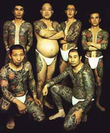
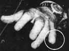

|


© 1995, 1996, 2001 T.E. BEARDEN |
The Last Samurai,
Defending Bushido
- 3 Major Yakuza Groups, In
Coalition.
- Penetrate Japanese
Government.
- Open Offices, Signs on
Street.
- Public Romanticizes Yakuza
as
Last Japanese Samurai
- In Large High-Tech
Corporations.
- In Control of Japanese
Banks.
- Japanese Real-Estate
Rip-off.
- $500 - 1,000 Billion per
Year Income.
- Rapidly Spreading in U.S.
- Uniting Mafia Groups
Worldwide.
- Coalition with Aum
Shinrikyo.
- Leased Russian Energetics
Weapons.
- Crews On-site in Russia,
Trained.
- Practice Firings into
Western
Australia for Three Years.
(Dozens of Shots per Month)
- Now in Escalation Phase,
Killing
U.S. Targets.
- All-out Strike on U.S. ready
1999-2000.
- Now held in check by KGB,
dead-man
fuzed by small nation friendly to U.S.
|